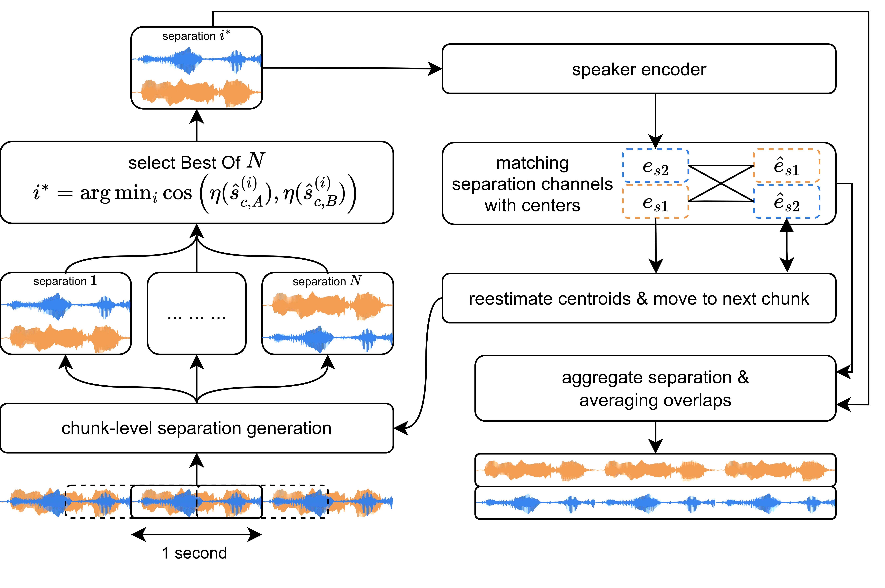
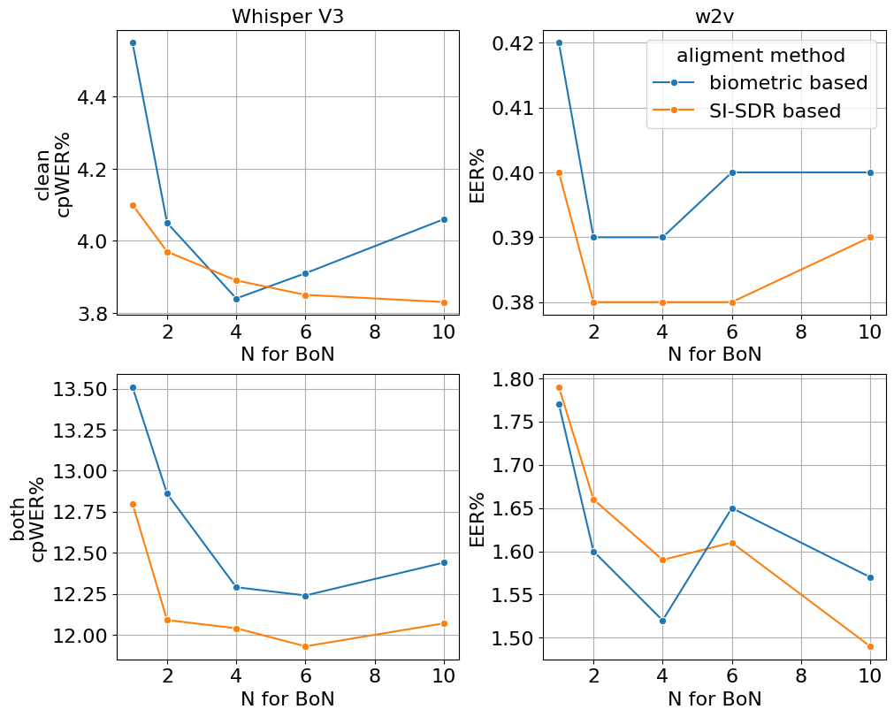

Flow Matching-Based Speech Source Separation with Best-of-N Biometric Sampling
Abstract
Single-channel speech separation remains challenging for real-world deployment due to source permutation ambiguity, sampling variability of generative models, and the difficulty of processing long recordings with chunk-wise inference. We address these issues with a conditional flow-matching-based method that produces an ordered two-source output conditioned on the mixture. A frozen speaker encoder defines the source order during training and is reused at inference for biometric best-of-N candidate selection and chunk-level channel alignment. We evaluate separation quality on Libri2Mix benchmark using SI-SDR, PESQ, and ESTOI, and measure downstream impact using cpWER for automatic speech recognition and EER for speaker verification. The results show that the proposed Transformer U-Net variant is competitive with strong baselines in objective separation metrics and achieves the lowest downstream automatic speech recognition and speaker verification error rates in all evaluated settings.
Method Overview
Training: biometric source ordering replaces permutation-invariant target ambiguity with a deterministic regression target.

Inference: overlapping chunks are separated, selected by biometric Best-of-N, aligned by speaker centroids, and reconstructed by overlap-add.

Best-of-N: the biometric criterion approaches SI-SDR oracle selection without access to ground-truth references.
Results
| Model | SI-SDR ↑ | PESQ ↑ | ESTOI ↑ |
|---|---|---|---|
| ConvUnet (ours) | 14.42 / 9.28 | 2.64 / 1.65 | 0.90 / 0.75 |
| TUnet (ours) | 17.30 / 11.25 | 3.11 / 1.92 | 0.93 / 0.79 |
| DiffSep | 9.60 / - | 2.58 / - | 0.78 / - |
| SepReformer (chunk) | 11.30 / - | 2.45 / - | 0.88 / - |
| SepReformer (full) | 19.22 / 13.70 | 3.02 / 2.14 | 0.92 / 0.83 |
| MeanFlow-TSE (full) | 17.56 / 11.68 | 3.27 / 2.18 | 0.91 / 0.80 |
| Model | Whisper V3 cpWER ↓ | Parakeet cpWER ↓ | ResNet EER ↓ | Wav2Vec 2.0 EER ↓ | DistilWhisper EER ↓ |
|---|---|---|---|---|---|
| ConvUnet (ours) | 4.99 | 25.51 | 3.17 | 0.51 | 1.28 |
| TUnet (ours) | 3.84 | 21.31 | 2.81 | 0.39 | 1.05 |
| MeanFlow-TSE (full) | 9.05 | 24.84 | 4.61 | 2.94 | 3.25 |
| SepReformer (full) | 5.02 | - | 2.92 | 0.72 | 1.29 |
| SepReformer (chunk) | 12.90 | - | 3.76 | 1.45 | 1.97 |
Audio Results
Audio files are placeholders for now. Add WAV files into the prepared folders and the players below will work without changing the page.
Libri2Mix
VoxConverse
Real Recording
BibTeX
@inproceedings{zorkina2026flowmatchingseparation,
title = {Flow Matching-Based Speech Source Separation with Best-of-N Biometric Sampling},
author = {Zorkina, Anastasia and Anikin, Alexandr and Khmelev, Nikita and Korenevskaya, Anastasiya and Novoselov, Sergey and Volokhov, Vladimir and Korenevsky, Maxim and Matveev, Yuriy},
booktitle = {ICML 2026 Workshop on Machine Learning for Audio},
year = {2026},
url = {http://arxiv.org/abs/2607.06088}
}